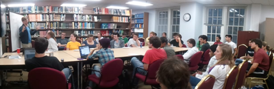

| Home | Research | Teaching | Astrophoto | CV |
I am advising six undergraduates on their College Park Scholars Capstone
Project requirement. These students are working with me to further develop my open
source differential photometry code, oscaar (see Research Interests),
to make it more user friendly and more widely used in the amateur/small osbervatory
communities. Some are being taught to code in Python, while others are being taught to code HTML
and CSS to build our own online database of photometric observations taken with oscaar.
I was the proud president of the University of Maryland's student astronomical society,
the AstroTerps
from 2011-2012. I arranged
and moderated weekly meetings with speakers from the Departments of Astronomy and Physics who speak
to undergraduates of all majors. We took trips to the University of Maryland Observatory
and dark sky locations throughout the region, and I promoted activism to fight light pollution
in the campus community.

I was nominated to serve as a Peer Mentor for freshmen members in College Park Scholars in 2010. Peer Mentors act as peer advisors for academic and residential life in the Scholars living-learning program.
In 2011, I volunteered more than 100 hours at the National Air and Space Museum in downtown Washington, D.C., where I served at Visitor Services. There I helped direct visitors around the museum to the most interesting artifacts and helped them access detailed information about them. What cooler place is there to volunteer than next to the Apollo 8 capsule, under the Spirit of St. Louis, surrounded by other enthusiastic aero/space nerds? Nowhere!
Brett Morris
Graduate Student
Department of Astronomy
University of Washington, Seattle